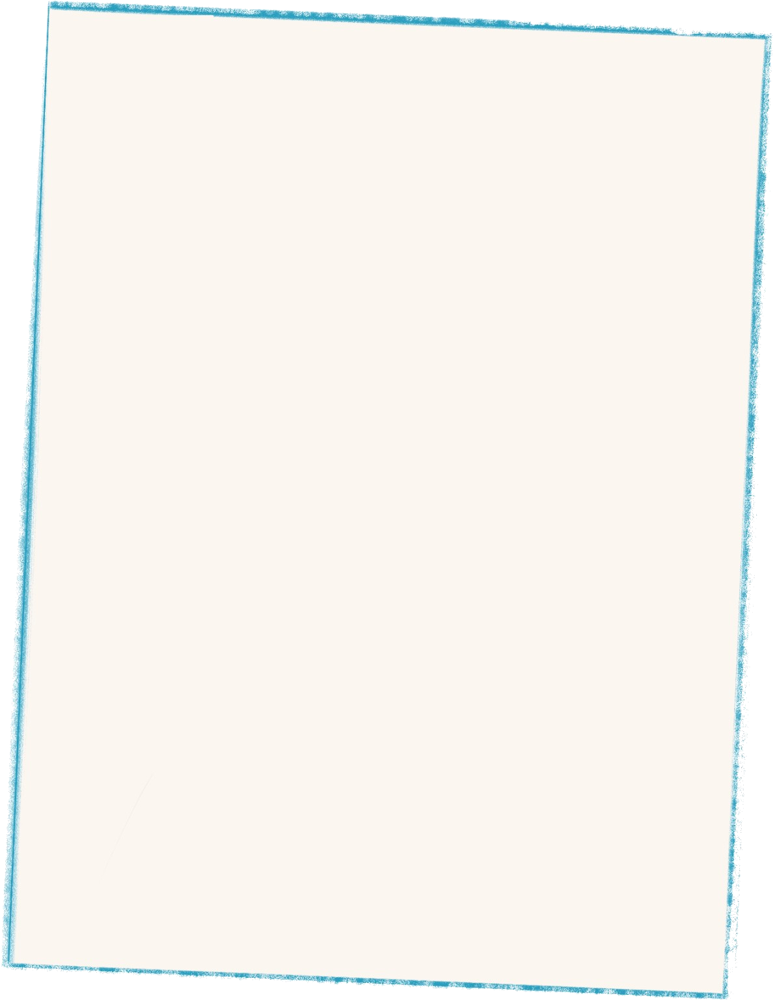
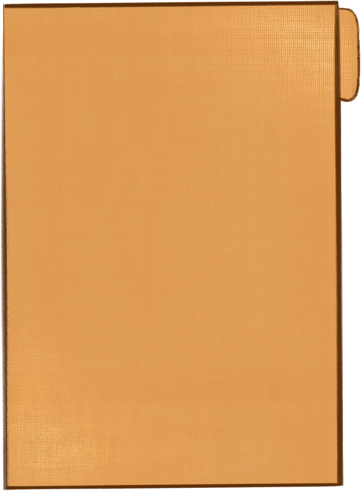
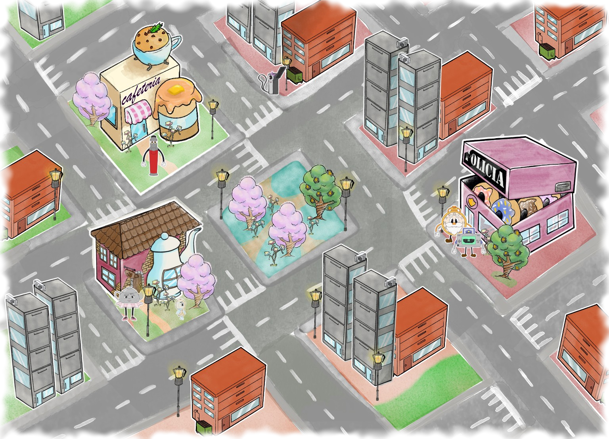

Entre cenizas y secretos, la verdad espera ser descubierta.

Detrás de cámaras
Un recorrido por los bocetos, las pruebas y la creación de Cinta Perdida.
Juego de mesa
Accedé a los materiales para descargar, imprimir y jugar.


Universo
Personajes y contenidos audiovisuales que expanden el mundo del proyecto.
¿Un archivo perdido?
Hay algo más escondido entre estos documentos...